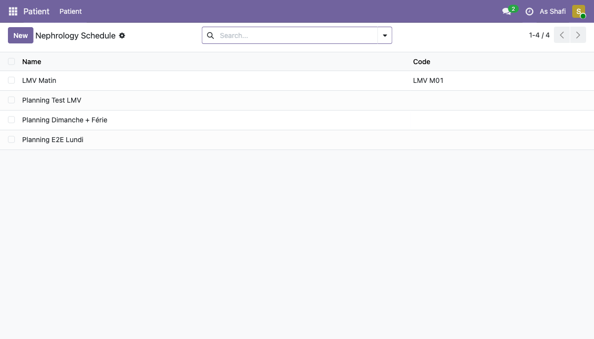
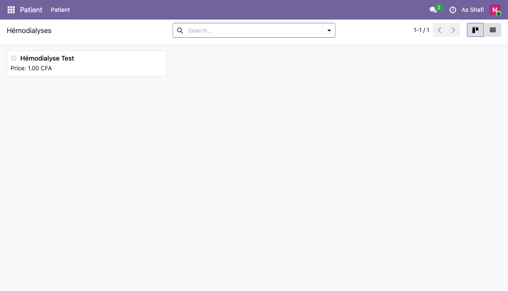

Les menus de configuration sont accessibles différemment selon le rôle de l'utilisateur. Certains items sont réservés à l'administrateur ou au médecin. Ce guide recense toutes les sections de configuration disponibles, les URLs directes, et les bonnes pratiques d'utilisation.
Matrice des accès de configuration
Planning de dialyse (Nephrology Schedule)
Les plannings de dialyse organisent les séances en créneaux hebdomadaires récurrents. Chaque planning définit les jours de la semaine, les horaires, le poste de dialyse par défaut, le médecin référent et les infirmières assignées.

Liste des plannings — 4 plannings configurés
Plannings actuellement configurés :
Champs d'un planning :
| Champ | Description |
|---|---|
| Nom | Libellé affiché dans les listes et dashboards |
| Code | Identifiant court pour les références internes |
| Jours de la semaine | Cases à cocher L / M / M / J / V / S / D |
| Heure début / fin | Plage horaire du créneau de dialyse |
| Poste de dialyse par défaut | Fauteuil ou poste attribué par défaut aux séances de ce planning |
| Médecin référent | Médecin responsable du planning (visible dans le dashboard médecin) |
| Infirmières assignées | Liste des infirmières autorisées à voir les patients de ce planning |
Hémodialyses (catalogue produits)
Cette section liste les produits de type nephrology_procedure disponibles pour la prescription.
Chaque enregistrement représente un type de séance d'hémodialyse facturable.
Ces produits sont liés aux lignes de facture de dialyse générées automatiquement.

Catalogue des procédures néphro — exemple : Hémodialyse Test
- 1 Accédez via /odoo/action-561 ou via le menu médecin.
- 2 Cliquez sur New pour créer un nouveau type de procédure.
-
3
Renseignez le Nom, le Prix de vente (en CFA) et le type interne
nephrology_procedure. - 4 Ce produit sera sélectionnable dans les prescriptions d'hémodialyse du médecin.
Règles tarifaires
Les règles tarifaires définissent le prix à appliquer pour les séances de dialyse selon le patient, son assureur, ou tout autre critère configurable. Elles sont appliquées automatiquement lors de la génération des factures.

Règles tarifaires configurées — deux tarifs standards
Tarifs actuellement configurés :
Assureurs
Ce menu liste les organismes d'assurance maladie partenaires du centre de dialyse. Chaque assureur peut être lié à un ou plusieurs patients via un dossier assureur qui précise le taux de prise en charge.

Liste des assureurs — Assureur Test configuré
Exemple d'assureur configuré :
| Champ | Valeur |
|---|---|
| Nom | Assureur Test |
| Code | ASS-TEST |
| Téléphone | +221 33 000 0000 |
| test@assureur.sn |
- 1 Pour créer un assureur, cliquez sur New et renseignez les informations de contact.
- 2 Pour lier un patient à un assureur, ouvrez le dossier assureur depuis la fiche patient et sélectionnez l'assureur ainsi que le taux de prise en charge (en %).
- 3 Le taux est appliqué automatiquement lors de la génération de la facture : la part assureur et la part patient sont calculées et affichées séparément.
Types de dialyseur
Les types de dialyseur correspondent aux membranes de filtration utilisées lors des séances. Ils sont sélectionnables dans la prescription d'hémodialyse rédigée par le médecin.
- 1 Accédez via /odoo/action-549.
- 2 Exemple existant : Fresenius FX80 — dialyseur haute perméabilité, couramment utilisé en hémodialyse de haute efficacité.
- 3 Pour ajouter un nouveau type, cliquez sur New, renseignez le Nom, le Fabricant et les caractéristiques techniques si disponibles.
Types de dialysat
Le dialysat est la solution de rinçage utilisée pendant la séance pour éliminer les déchets. Le type de dialysat est prescrit par le médecin et consigné dans la fiche de séance.
- 1 Accédez via /odoo/action-548.
- 2 Exemple existant : Dialysat Bicarbonate Standard — composition standard à base de bicarbonate, la plus courante en hémodialyse.
- 3 Pour ajouter une nouvelle composition, renseignez le Nom, la Concentration en bicarbonate et les ajustements électrolytiques si nécessaires.
Jours fériés néphro
Le module HMS Néphro dispose d'un calendrier de jours fériés spécifique
(modèle acs.nephrology.holiday). Les dates configurées ici sont
exclues automatiquement lors de la génération en lot des séances de dialyse,
évitant la création de séances sur des jours non ouvrables.
- 1 Nom — libellé du jour férié (ex : "Fête de l'Indépendance").
- 2 Date — date exacte du jour non travaillé.
- 3 Récurrent — si coché, ce jour férié est automatiquement reconduit chaque année à la même date (ex : 1er janvier, 1er mai…).
- 4 Les jours fériés n'affectent pas les séances déjà planifiées — ils n'impactent que la génération future via le bouton Générer les séances.